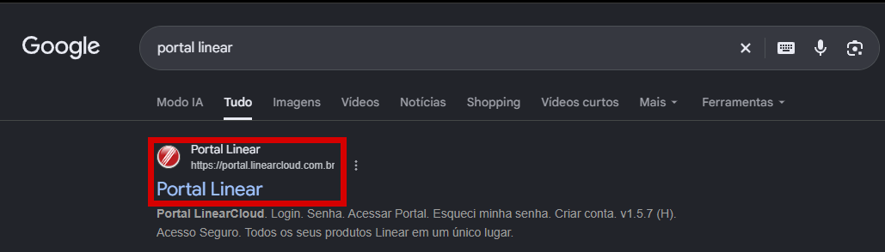
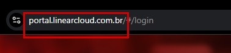
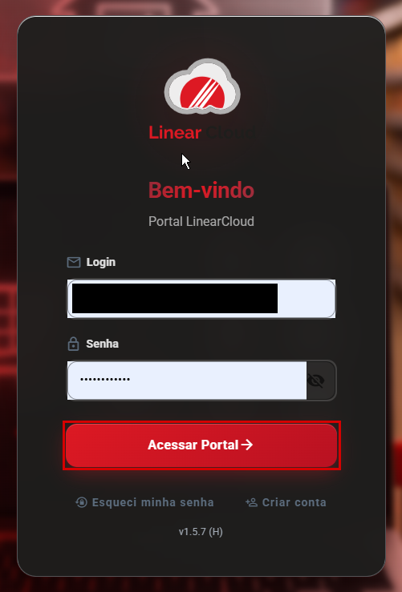
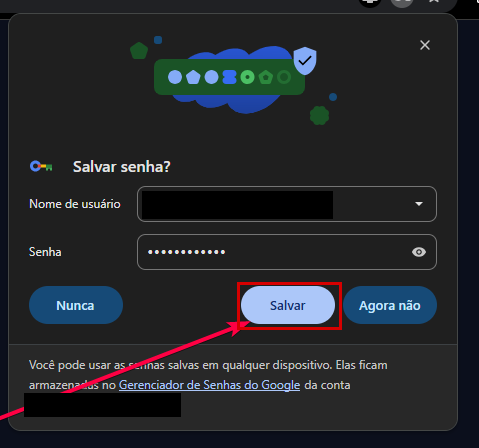
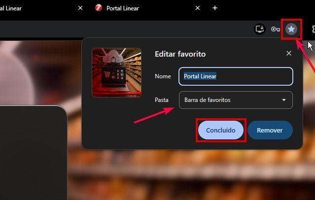

Como acessar o Linear pelo Portal
O Linear agora funciona na nuvem. Para entrar, use o Portal LinearCloud. Recomendamos o Google Chrome.
Passo a Passo:
- Passo 1: Abra o Google Chrome e pesquise por "Portal Linear". Clique no primeiro resultado, que leva a portal.linearcloud.com.br.
- Passo 2: No quadro escuro, digite seu e-mail no campo Login e a senha no campo Senha. Depois clique no botão vermelho "Acessar Portal".
- Passo 3: Quando o Chrome perguntar "Salvar senha?", clique em "Salvar". Assim, nas próximas vezes, login e senha já aparecem preenchidos.
- Passo 4: No menu escuro da esquerda, clique em "SGLinear - Sistema de gestão e ERP". Aguarde a tela do Linear abrir e entre com o mesmo usuário e senha que você já usava no Linear.





Dica - Salve nos favoritos:
- Dica: Com o portal aberto, clique na estrela, no canto da barra de endereço. Em Pasta, deixe Barra de favoritos e clique em Concluído. Depois, é só clicar em Portal Linear nos favoritos.

Nota: Se o login ou a senha não funcionarem, ou se o SGLinear não abrir, avise o suporte no Grupo do TI.